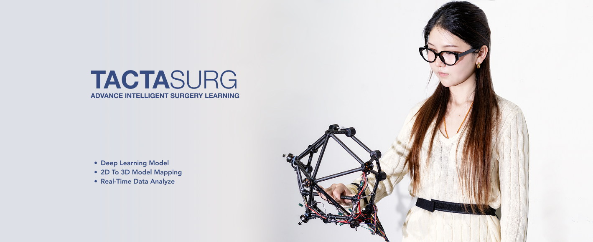
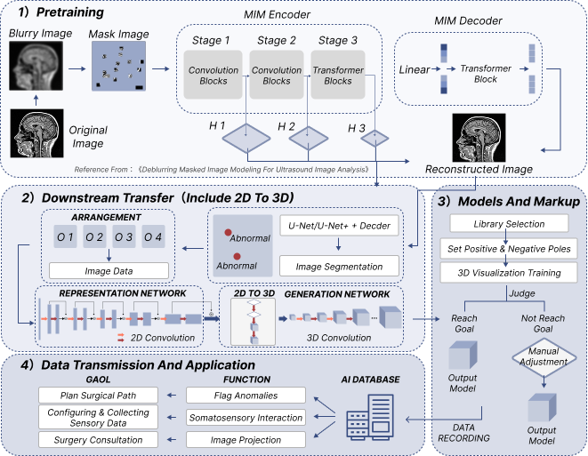
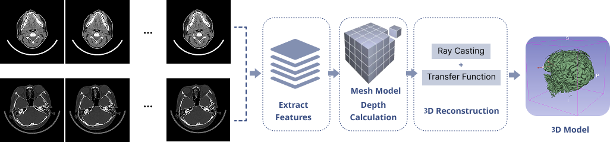
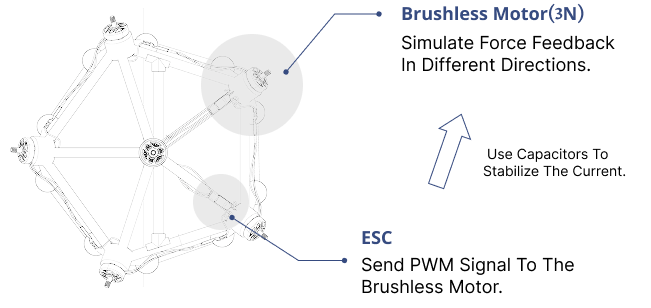
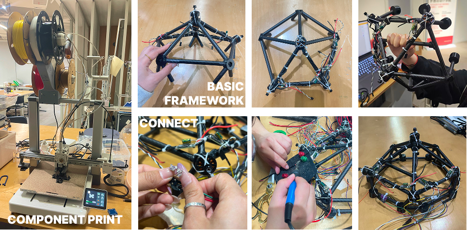
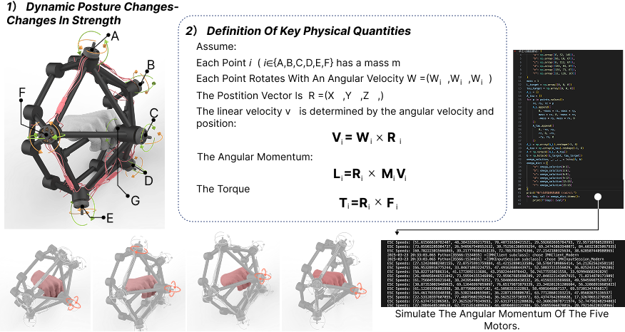
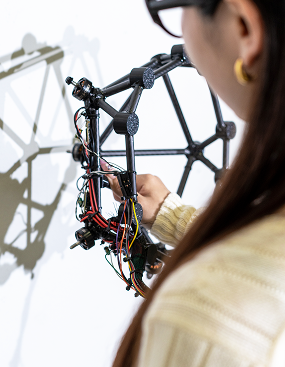
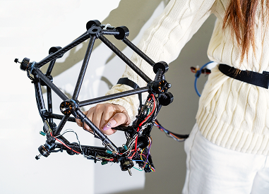
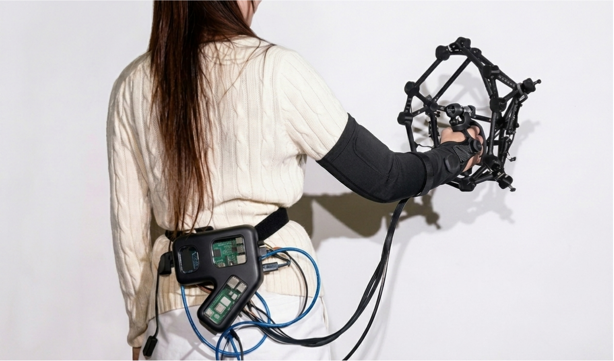

Most current AR/VR medical training devices rely primarily on visual and auditory input, but in real surgery the most crucial factor is force feedback. Existing AI training systems cannot yet simulate the control of incision depth or the counterforce of tissue when using a scalpel. Moreover, most devices still follow a linear, procedural training model, whereas real surgeries involve non-linear decision-making and on-the-spot adjustments—and data related to these aspects is often missing or not recorded.
In this project, I focus on simulating force feedback during surgical procedures and on machine autonomous deep learning. This prototype interactive device integrates motion-based interaction, haptic feedback, and an adaptive learning mechanism. By using AI to continuously learn from and model data such as force, spatial coordinates, and operation depth during procedures, it provides medical professionals with a preoperative simulation and training experience that more closely approximates real tactile sensations.
Masked image modeling technology trains AI to complete autonomous image learning and helps doctors analyze medical images.

Images to 3d model: Use AI algorithms to extract features and calculate depth from 2D images to infer the 3D structure of the image; then, use the depth information to generate a 3D mesh model; Finally, we use texture mapping to assign the image texture to the 3D model.

Prototype interaction device: Doctors can obtain a 3D perspective from 2D CT images, so that complex internal structures can be intuitively displayed and analyzed, helping medical professionals obtain more detailed organ information.


Work principle : When holding the interactive handle for surgical simulation, the user actively generates three-axis changes and force output; the handle will continuously monitor the posture data through the MPU9250 sensor, and dynamically adjust the speed of the motor to simulate the reaction force to the user's input force, respond to real-time posture changes, and complete the device's force feedback somatosensory interaction process.



